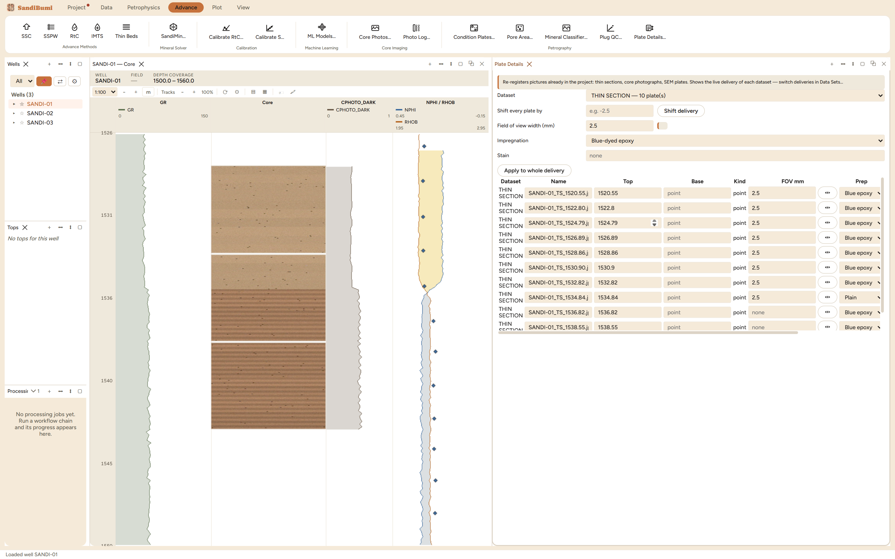

Plate Details is where every picture in the project states what it is:
its depth, its field-of-view width, whether it was impregnated, and what
stain it carries. None of those can be read off the pixels, because the
evidence for "this is blue epoxy" is the blue about to be measured, so
they are declared here, and every measurement downstream
either uses the declaration or refuses without it. Reach for it right
after importing a petrography delivery, and again whenever a plate turns
out to have been delivered at the wrong depth.
The pane

The example delivery declared: 2.5 mm field of view and
blue-dyed epoxy across ten plates, then corrected per plate: one
plate marked Plain (never impregnated), two with their scale
cleared because nothing states it.
Scale is a field-of-view width in mm, never µm per
pixel. The stored copy is resampled, so a per-pixel scale belongs
to whichever copy it was measured on; "this picture is 2.5 mm
across" is true of every copy. The ⇹ button on each row
measures a scale bar burned into the plate: drag along the bar, type
its printed length, and the field of view follows as a pure ratio.
Delivery-wide values fill the blanks; what is stored belongs to
the plate. One impregnation run and one staining bath are
delivery facts, but magnification genuinely varies, so the per-plate
row always wins. Applying to a whole delivery requires choosing one
dataset first; with "All datasets" selected the pane refuses:
Choose one dataset first — scale and preparation belong to a delivery
Every value is written as given, including empty. A scale
typed by mistake must be clearable; the two lower plates here had
their field of view cleared to "none", which is the honest state,
and everything dimensional refuses them by name rather than
reporting pixels.
Step by step
Open Advance ▸ Petrography ▸ Plate
Details… and select the delivery's dataset.
Enter the delivery-wide field of view and preparation, press
Apply to whole delivery, then walk the rows and correct the
exceptions: the unimpregnated plate, the odd magnification, the
plate whose caption states no scale.
Fix a wrong depth in the row (a base above its top is refused, not
swapped), or move a whole delivery with Shift every plate
by.
Reading the result
A blank base means a point sample and it is a petrophysical statement:
a thin section is cut from one plug and has no thickness, so it is
anchored at its depth rather than stretched over a guessed interval, and
a shift moves it without giving it one. On the example delivery the
declarations drive everything that follows in this book: Pore Area
refuses the Plain plate by name, measures area fractions on all nine
others, and writes pore diameters only for the seven that kept a scale.
A declaration is not a formality. It is the difference between a refusal
you can read and a wrong number that plots.
QC and pitfalls
Unknown preparation is refused, not assumed either way. A
blue rule over an unimpregnated section does not fail; it returns a
porosity assembled from blue-ish minerals and stain bleed that then
plots against core helium porosity looking entirely reasonable.
A magnification is not a field of view. "10x" needs the
camera sensor and tube factor to become micrometres, and the
delivery states neither; measure the scale bar instead.
Applying a scale to the delivery never overwrites
preparation. Each plate keeps what the section was made of; a
scale must never quietly rewrite a stain.